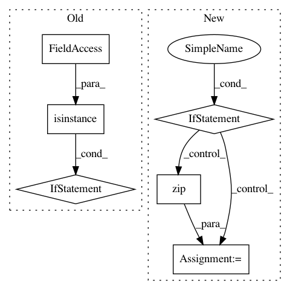

658e1686e98be87c265d42e76847c9c151bc9561,gensim/models/hdpmodel.py,HdpModel,inference,#HdpModel#Any#,210
Before Change
def inference(self,chunk):
lda_alpha = self.lda_alpha
lda_beta = self.lda_beta
if not (isinstance(lda_alpha,np.ndarray) and isinstance(lda_beta,np.ndarray)):
raise RuntimeError("corpus must be trained to perform inference")
try:
_ = len(chunk)
except:
chunk = list(chunk)
After Change
self.update(corpus)
def inference(self, chunk):
if self.lda_alpha is None or self.lda_beta is None:
raise RuntimeError("model must be trained to perform inference")
chunk = list(chunk)
if len(chunk) > 1:
logger.debug("performing inference on a chunk of %i documents" % len(chunk))
gamma = np.zeros((len(chunk), self.lda_beta.shape[0]))
for d, doc in enumerate(chunk):
if not doc: // leave gamma at zero for empty documents
continue
ids, counts = zip(*doc)
_, gammad = lda_e_step(ids, counts, self.lda_alpha, self.lda_beta)
gamma[d, :] = gammad
return gamma
In pattern: SUPERPATTERN
Frequency: 3
Non-data size: 6
Instances
Project Name: RaRe-Technologies/gensim
Commit Name: 658e1686e98be87c265d42e76847c9c151bc9561
Time: 2014-01-05
Author: radimrehurek@seznam.cz
File Name: gensim/models/hdpmodel.py
Class Name: HdpModel
Method Name: inference
Project Name: geomstats/geomstats
Commit Name: b7efa1f037f8adc94a28fc421dd7934b63b3043e
Time: 2020-04-22
Author: 62605255+pchauchat@users.noreply.github.com
File Name: geomstats/_backend/numpy/__init__.py
Class Name:
Method Name: assignment
Project Name: aleju/imgaug
Commit Name: 7ce6ab2b22bdf6e27c88cb0839768e0458f00e51
Time: 2019-03-30
Author: kontakt@ajung.name
File Name: imgaug/augmentables/normalization.py
Class Name:
Method Name: invert_normalize_images